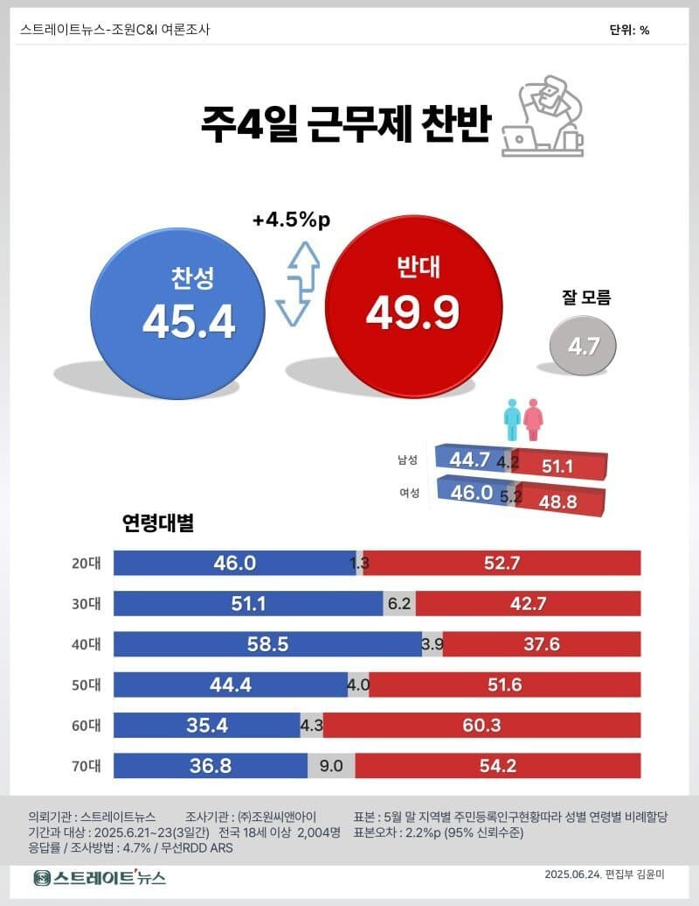

https://cafe.daum.net/subdued20club/ReHf/5782720?svc=cafeapi

https://cafe.daum.net/subdued20club/ReHf/5782720?svc=cafeapi

어차피 공무원들이나 해당.. 우리회사는 안해줄게 뻔하니까 반대애애애앳!!!!
공무원이 제일 늦게 적용됨 ㅋㅋㅋ 주5일제도 가장 늦었음
주 4일제를 월급쟁이가 반대할 이유가 이씀?
"HR(인사관리) 테크 기업 원티드 랩이 지난 6월 직장인 1700여명을 대상으로 주 4일제 찬반여부 등을 물은 결과 ‘연봉 감소를 감안하고도 주 4일제를 선호하는지’에 대한 질문에 51.4%가 찬성했다.
찬성 여론이 근소하게 많지만 '연봉 삭감 폭'에서는 근무시간 감소 폭과 시각 차이를 보였다. 찬성자 중 73.4%가 감당할 수 있는 연봉 삭감 폭에 대해 '5% 미만'이라고 답했고 '5%~10%'가 21.5%였다. 모두 85.9%가 용인할 수 있는 연봉 삭감 수준을 '10% 미만'이라고 답한 것이다. "
돈때문에?
돈이 왜 준다고 생각하지?
설마 주4일제하고서 연봉은 그대로라고 생각하는거임?;;
주6일에서 5일로 넘어갈 때도 연봉 그대로지 않음? 정확히는 올려야할 연봉을 근무일수 축소로 퉁친거지만
급여삭감되자나
늙으면 일 덜하고 좀 놀고싶지 않나? 여행도 다니면서 쉬고
왜 저렇게 나왔누
집에서 여편네 잔소리 듣는 것 보다 출근해서 부하 직원한테 잔소리하는게 더 좋으니까
그런 애들이 회사 나와서 반은 처놀러다니고 근무시간 끝나도 남아서 게임하거나 영화보고 집 가더라
월급삭감 주 4일제 찬성..
난 월급 20프로 까여도 4일하고 싶다
개좆소다닐때 처음엔 주4일해준대서 들어가니까 막상 일이 ㅈㄴ바빠서 주6일 16시간씩 일했는데 주4일제 해도 개좆소는 안바뀔듯
하루라도 집에서 내새끼 애기시절 때를 더 보고싶어요
나 그래서 육휴 시원하게 갈김ㅋㅋㅋ
연봉제나 좋은거지 일당제들은 그대로 가난뱅이직행이다...
기업입장도 고려해야함
요즘 기업들 존나 힘들어서
권고사직에 채용을 안 함
근데 주4일제 하면서 급여는 그대로 준다? 힘들지
임금 그대로에 주4일 이면 당장은 ㅈㄴ 좋을거 같은데 독일이나 이런데 보면 얼마 안가 다 ㅈ댈거 같기도 하고 잘 모르겟다
저거도 중요한데 다른 얘기로
올해 초에 포괄임금제 폐지 얘기 나오지 않았나
이건 왜 안사라지는거임 사실적시 명예훼손이랑 투탑으로 무쓸모법인데
기업이 어려우니까 못없앰 작년에 2천개회사망함
우리회사도 포괄임금제 때문에 직원들 존나게 나감
업무량이 많아서 4일 가지고 못쳐내겠더라
유럽이 먼저 가서 망해가는 꼴 보니까 고민되긴 함
반대하는 사람들은 일 안하는 사람(20대, 6~70대)들 혹은 관리자급(50대)들이네... -_-
것도 있겠지만 시급이나 소득이 낮은 구간이라 시간으로 많이 때워야하는 것두 있을듯?
4일해라 좋은말로할때
지금 시행하는 회사들도 연봉삭감하고 하던가 다른날 근무시간 늘려서 하던가 이런게 많아서
연봉 그대로에 인력도 늘려서 근무시간 유지한다?
지금 취직도 안되는데 그게 되겠냐?
줄이면 줄인만큼 일 자체의 양 때문에 다른날 더 해야할듯
반대하는애들 다 죽었으면 좋겠다
어르신들은 왜 투표하는거임? 기초연금 파밍시키는거냐
주4일제가 문제가 아니라
포괄과 근로기준법어기고 52시간 이상 시키는게문제
애초에 리밋으로 걸어논것도 안 지키는데 주5일 4일이 무슨의미...
그리고 반도체특별법으로 야근수당 안주고 69시간 초과근무 가능하게 해놨는데
주4일제 논의가 의미있나싶은...
의미는 있음
52시간 어기는건 대부분 중소 중견이고
걔네들은 대기업 업무시간에 따라감
대기업 6-70시간 하던 시절엔 하청 100-120시간이였던거고
대기업이 52시간 하니까 하청도 7-80시간만 하는거
대기업이 주4일하면 주6-7일하던 하청도 5-6일 할수도 있지
영포티 압도적이구만
누가반대함? 하 시바
좆괄만없애도 살만하지
일 안 하는 연령대에서 반대 왜 이렇게 심해 ㅋㅋㅋㅋㅋ
5일제나 제대로해라 ㅋㅋㅋ
일 더 하겠다는 애들은 아파트 영끌 빚 갚아야되서 그래
주 4일 하겠다는 애들은 어차피 가망 없으니 삶을 즐기고 싶은 거고
49% 인 애들만 5일제하죠?
자영업자는 찬반 갈리겠네 상권차이 많이 날듯